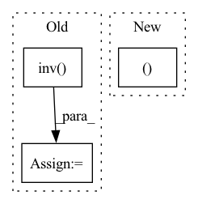

Pattern ID :25375
Before Change
intrinsic_metrix[2, 2] = 1
if inv:
intrinsic_metrix = np.linalg.inv( intrinsic_metrix) .astype(np.float32)
return intrinsic_metrix
After Change
if inv:
intrinsic_metrix[0, 0] = 1.0 / f[0]
intrinsic_metrix[0, 2] = -c[0] / f[0]
intrinsic_metrix[1, 1 ] = 1.0 / f[1]
intrinsic_metrix[1, 2] = -c[1] / f[1]
intrinsic_metrix[2, 2] = 1
else:In pattern: SUPERPATTERN
Frequency: 3
Non-data size: 3
Instances Fragment ID: 77591294
Project Name: jeff-sjtu/hybrik
Commit Name: 92acf081ef9614671c907a697ba7eeea5a0b08e6
Time: 2021-10-22
Author: jeff.lee.sjtu@gmail.com
File Name: hybrik/utils/pose_utils.py
M Class Name: AnonimousClass
N Class Name: AnonimousClass
M Method Name: get_intrinsic_metrix(3)
N Method Name: get_intrinsic_metrix(3)
M Parent Class:
N Parent Class:
M File Name: hybrik/utils/pose_utils.py
N File Name: hybrik/utils/pose_utils.py
M Start Line: 122
M End Line: 131
N Start Line: 122
N End Line: 137
Before Change
// performs the inverse square root of the covariance matrices by the cholesky decomposition. This is more stable than using SVD
SigmaHat11RootInv = torch.linalg.inv(torch.linalg.cholesky(_minimal_regularisation(SigmaHat11, self.eps)))
SigmaHat22RootInv = torch.linalg.inv( torch.linalg.cholesky(_minimal_regularisation(SigmaHat22, self.eps)))
Tval = torch.matmul(torch.matmul(SigmaHat11RootInv,
SigmaHat12), SigmaHat22RootInv)
trace_TT = torch.matmul(Tval.t(), Tval)
eigvals = torch.real(torch.linalg.eigvals(trace_TT))
eigvals = eigvals[torch.gt(eigvals, self.eps)]
corr = torch.sum(torch.sqrt(eigvals))After Change
n = H1.shape[0]
H1bar, H2bar = _demean(H1, H2)
SigmaHat12 = (1.0 / (n - 1)) * torch.matmul(H1bar.T, H2bar)
SigmaHat11 = (1 - self.r) * (1.0 / (n - 1)) * torch.matmul(H1bar.T, Fragment ID: 77591300
Project Name: jameschapman19/cca_zoo
Commit Name: 109657aa0c08d40d8571bc16e653094cb6206408
Time: 2021-07-14
Author: james.chapman.19@ucl.ac.uk
File Name: cca_zoo/deepmodels/objectives.py
M Class Name: CCA
N Class Name: CCA
M Method Name: loss(3)
N Method Name: loss(3)
M Parent Class:
N Parent Class:
M File Name: cca_zoo/deepmodels/objectives.py
N File Name: cca_zoo/deepmodels/objectives.py
M Start Line: 143
M End Line: 171
N Start Line: 145
N End Line: 166
Before Change
direction = np.array(sitk_image3d.GetDirection())
transformation = np.array(direction.reshape(3,3))
transformation = np.linalg.inv( transformation)
points_image3d = points_physical_translated.dot(transformation).astype("int")
// assign indexes outisde the boundary zeros (no negative indexes)
size3d = sitk_image3d.GetSize()After Change
grid_final[0,0,-1,:].tolist(),
grid_final[-1,-1,-1,:].tolist()]
return grid, points //sorted(corner_points)
Fragment ID: 77591281
Project Name: gml16/rl-medical
Commit Name: abe6cab879e3a521418828329a86df80603ade97
Time: 2018-04-17
Author: aa16914@aemella.doc.ic.ac.uk
File Name: examples/AutomaticViewPlanning/DQN/detectPlaneHelper.py
M Class Name: AnonimousClass
N Class Name: AnonimousClass
M Method Name: sampleGrid(7)
N Method Name: sampleGrid(7)
M Parent Class:
N Parent Class:
M File Name: examples/AutomaticViewPlanning/DQN/detectPlaneHelper.py
N File Name: examples/AutomaticViewPlanning/DQN/detectPlaneHelper.py
M Start Line: 59
M End Line: 92
N Start Line: 48
N End Line: 104